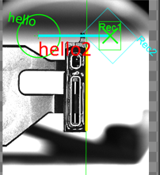

显示与格式化
功能
使用脚本实现在视图中格式化显示的功能。
接口
| 接口名称 |
接口描述 |
| ImageShowTextXY |
用XY坐标表示需要显示的位置文字 |
| ImageShowTextPos |
用二维向量的位置显示文字 |
| ImageShowCircle |
用二维向量的位置显示圆 |
| ImageShowPolyline |
用点向量生成多边形 |
| ImageShowLine |
用直线显示直线的位置 |
| ImageShowLineSeg |
用线段显示线段的位置 |
| ImageShowLineSegVec |
用两点显示线段的位置 |
| ImageShowRec |
显示矩形区域 |
| ImageShowRecCenter |
用中心和长宽显示矩形区域 |
| ImageShowAffRec |
显示仿射矩形区域 |
| ImageShowAffRecCenter |
用中心长宽角度显示仿射矩形区域 |
| ImagechowCrossVec |
显示向量类型的十字 |
| ImagechowCrossCood |
显示位置姿态类型的十字 |
详细说明
ImageShowTextXY(self,guiArray,posX=100,posY=100,strmsg=“hello”,clrLineColor = [0,255, 0],lFontSize = 100,degree=0.0)
功能：用XY坐标表示需要显示的位置文字。
参数：
- self：ScImageShow类本身。
- guiArray：显示数组guiArray。
- posX：double类型，表示X位置。
- posY：double类型，表示Y位置。
- strmsg：string类型，表示需要显示的内容。
- clrLineColor ：RGB类型，默认 [0, 255, 0]绿色。
- lFontSize ：int类型，字体大小。
- degree：double类型默认角度0.0°。
ImageShowTextPos(self,guiArray,pos,strmsg=“hello”,clrLineColor=[0,255, 0],lFontSize=100)
- 功能：用二维向量的位置显示文字。
- 参数：
- self：ScImageShow类本身。
- guiArray：显示数组guiArray。
- pos：ScVector类型，表示显示位置。
- strmsg：string类型，表示需要显示的内容。
- clrLineColor：RGB类型，默认 [0, 255, 0]绿色。
- lFontSize：int类型，字体大小。
ImageShowCircle(self,guiArray,centerpos, R=50,clrLineColor=[0, 255, 0], nLineWidth=1)
- 功能：用二维向量的位置显示圆。
- 参数：
- self：ScImageShow类本身。
- guiArray：显示数组guiArray。
- centerpos：ScVector类型，表示显示圆心位置。
- R：int类型，表示圆半径大小。
- clrLineColor：RGB类型，默认 [0, 255, 0]绿色。
- nLineWidth：int类型，表示线宽。
ImageShowPolyline(self,guiArray,VectorVec, clrLineColor=[0,255, 0], nLineWidth=1)
- 功能：用点向量生成多边形。
- 参数：
- self：ScImageShow类本身。
- guiArray：显示数组guiArray。
- VectorVec：ScVectorVec类型，表示多边形上的点集。
- clrLineColor：RGB类型，默认 [0, 255, 0]绿色。
- nLineWidth：int类型，表示线宽。
ImageShowLine(self,guiArray,line,clrLineColor = [0,255, 0],nLineWidth = 1)
- 功能：用直线显示直线的位置。
- 参数：
- self：ScImageShow类本身。
- guiArray：显示数组guiArray。
- line：ScLine类型，表示直线。
- clrLineColor ：RGB类型，默认 [0, 255, 0]绿色。
- nLineWidth ：int类型，表示线宽。
ImageShowLineSeg(self,guiArray,lineSeg, clrLineColor=[0,255, 0], nLineWidth=1)
- 功能：用线段显示线段的位置。
- 参数：
- self：ScImageShow类本身。
- guiArray：显示数组guiArray。
- lineSeg：ScLineSeg类型，表示线段。
- clrLineColor：RGB类型，默认 [0, 255, 0]绿色。
- nLineWidth：int类型，表示线宽。
ImageShowLineSegVec(self,guiArray,Pos1,Pos2, clrLineColor=[0,255, 0], nLineWidth=1)
- 功能：用两点显示线段的位置。
- 参数：
- self：ScImageShow类本身。
- guiArray：显示数组guiArray。
- Pos1，Pos2：ScVector类型，表示二维向量。
- clrLineColor：RGB类型，默认 [0, 255, 0]绿色。
- nLineWidth：int类型，表示线宽。
ImageShowRec(self, guiArray, rect, clrLineColor=[0,255, 0], nLineWidth=1,strLabel= “”)
- 功能：显示矩形区域。
- 参数：
- self：ScImageShow类本身。
- guiArray：显示数组guiArray。
- rect：scRect类型，表示矩形。
- clrLineColor：RGB类型，默认 [0, 255, 0]绿色。
- nLineWidth：int类型，表示线宽。
- strLabel：string类型显示矩形的标号。
ImageShowRecCenter(self, guiArray,centerPos,W=100,==200, clrLineColor=[0,255, 0], nLineWidth=1,strLabel= “”)
- 功能：用中心和长宽显示矩形区域。
- 参数：
- self：ScImageShow类本身。
- guiArray：显示数组guiArray。
- centerPos：scVector类型，表示矩形。
- W：double类型表示矩形宽。
- H：double类型 表示矩形高。
- clrLineColor ：RGB类型，默认 [0, 255, 0]绿色。
- nLineWidth：int类型，表示线宽。
- strLabel：string类型显示矩形的标号。
ImageShowAffRec(self, guiArray, affinerect, clrLineColor=[0,255, 0], nLineWidth=1,strLabel= “”)
- 功能：显示仿射矩形区域。
- 参数：
- self：ScImageShow类本身。
- guiArray：显示数组guiArray。
- affinerect：scaffinerect类型，表示仿射矩形。
- clrLineColor：RGB类型，默认 [0, 255, 0]绿色。
- nLineWidth：int类型，表示线宽。
- strLabel：string类型显示矩形的标号。
ImageShowAffRecCenter(self, guiArray,centerPos,W=100,H=200,dangle=0.0, clrLineColor=[0,255, 0], nLineWidth=1,strLabel= “”)
功能：用中心长宽角度显示仿射矩形区域。
参数：
- self：ScImageShow类本身。
- guiArray：显示数组guiArray。
- centerPos：scVector类型，表示矩形。
- W：double类型 表示矩形宽。
- H：double类型 表示矩形高。
- clrLineColor：RGB类型，默认 [0, 255, 0]绿色。
- nLineWidth：int类型，表示线宽。
- strLabel：string类型 显示矩形的标号。
ImagechowCrossVec(self,guiArray, Vec, clrLineColor=[0,255, 0], nLineWidth=1)
- 功能：显示向量类型的十字。
- 参数：
- self：ScImageShow类本身。
- guiArray：显示数组guiArray。
- Vec：二维向量位置位置（含角度）。
- clrLineColor：RGB类型，默认 [0, 255, 0]绿色。
- nLineWidth：int类型，表示线宽。
ImagechowCrossCood(self, guiArray, Cood, size=10,clrLineColor=[0, 255, 0], nLineWidth=1)
- 功能：显示位置姿态类型的十字。
- 参数：
- self：ScImageShow类本身。
- guiArray：显示数组guiArray。
- Cood：位置姿态生成的位置（含角度）。
- size：尺寸大小。
- clrLineColor：RGB类型，默认 [0, 255, 0]绿色。
- nLineWidth：int类型，表示线宽。
示例代码
脚本中函数在使用过程中，格式比较统一，利于扩展。例程Demo与实际效果如下：

```python
from ScImageShow import ScImageShow
获取GUI显示数组——重要初始化显示数组
guiArray = GvVisionAssembly.GcScriptGuiArray()
ScImageShow.ImageShowTextXY(ScImageShow,guiArray,100,100,“hello”,[0, 255, 0],200,10.0)
ScImageShow.ImageShowTextXY(ScImageShow,guiArray,100,100,“hello”,[0, 255, 0],200,10.0)
pos=GvVisionAssembly.sc2Vector(500,500)
ScImageShow.ImageShowTextPos(ScImageShow,guiArray,pos,“hello2”,[255, 0, 0],300)
ScImageShow.ImageShowCircle(ScImageShow,guiArray,pos, 300, [0, 255, 0], 2)#显示一个圆
line=GvTool.GetToolData(“找线工具_003.直线结果”)
ScImageShow.ImageShowLine(ScImageShow,guiArray,line,[0, 255, 0],1)#显示直线
lineseg=GvTool.GetToolData(“找线工具_003.线段结果”)
ScImageShow.ImageShowLineSeg(ScImageShow,guiArray,lineseg,[255, 255, 0],5)#显示线段
p1=GvVisionAssembly.sc2Vector(500,500)
p2=GvVisionAssembly.sc2Vector(1500,500)
ScImageShow.ImageShowLineSegVec(ScImageShow,guiArray,p1,p2,[0, 255, 255],5)#两点显示线段
ScImageShow.ImagechowCrossVec(ScImageShow,guiArray,p1, [0, 255, 0], 1)#显示十字交点
Cood=GvVisionAssembly.GcCoordPos(p2,45)
ScImageShow.ImagechowCrossCood(ScImageShow,guiArray,Cood,150, [0, 255, 0], 3)#显示十字交点
ScImageShow.ImageShowRecCenter(ScImageShow, guiArray,p2,300,400, [0, 255, 0], 1,“Rec1”)#显示矩形
ScImageShow.ImageShowAffRecCenter(ScImageShow, guiArray,p2,600,500,45, [0, 255, 255], 1,“Rec2”)#显示仿射矩形
将GUI数组设置到视图——只需要设置一次在程序末尾
GvGuiDataAgent.SetGraphicDisplay(“View-1”, guiArray)
```
注意：
from ScImageShow import ScImageShow
引用库：ScImageShow
类名称：class ScImageShow